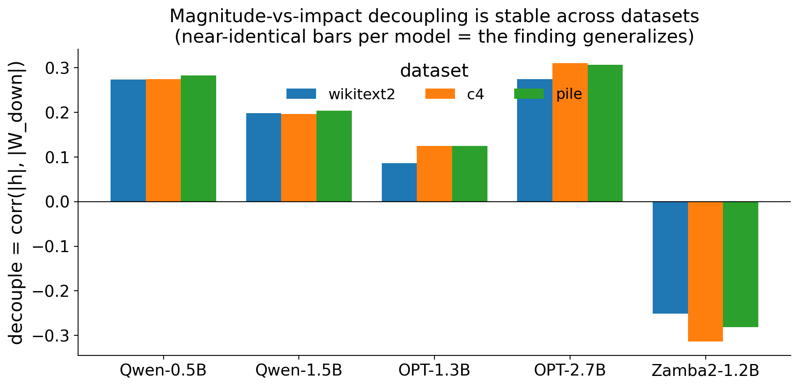
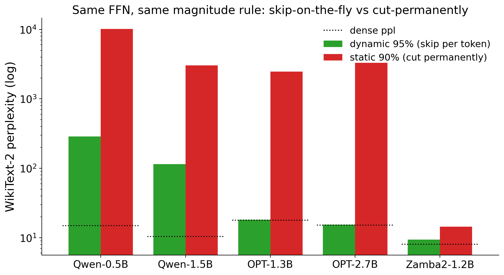
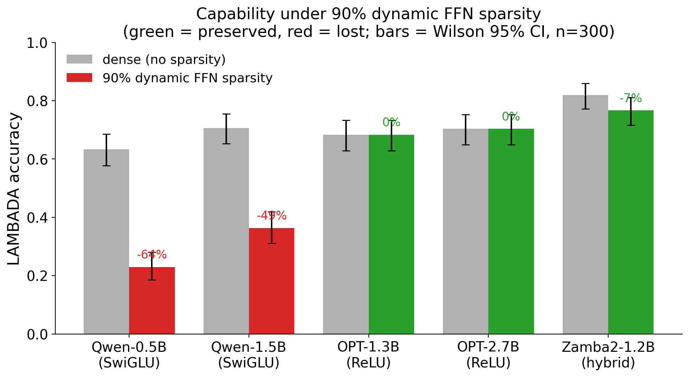

— and which one works depends on whether the part remembers or recomputes.
GHOST paper Sparser·Faster·Lighter Code
Inside a modern AI language model there are two very different kinds of working parts. Some hold a running memory — information the model carries forward as it reads, the way you keep track of who “she” refers to three sentences later. Others are disposable scratch-work — features the model recomputes from scratch for every word and then throws away.
Both are expensive, so to run these models on cheaper hardware we remove the parts that aren't pulling their weight. There are two ways to remove a part: cut it out permanently before you ever run the model (call it static pruning — scissors, done once), or keep every part but, at each step, switch on only the few that matter and skip the rest (call it dynamic sparsity — nothing deleted, most of it just idle at any instant). And there's a cheap way to decide which parts to drop — by size (bigger-looking = assumed more important) — versus an expensive way that actually measures how much each part changes the answer.
The question is which combination is safe, and when. Our answer: it depends on what the part does. The memory parts must be cut permanently, and you must use the expensive measure-the-real-effect rule — because the cheap “by size” rule throws away small-looking pieces that are quietly doing the work. The scratch-work is the opposite: you can't cut any of it permanently without breaking the model, but you can skip almost all of it on the fly — and there the cheap rule is already nearly perfect.
GHOST (ours, ICML 2026) showed that to prune a Mamba-2 model's recurrent memory, size is a bad guide: weight magnitude and true importance are essentially uncorrelated (\(\rho=-0.19\)), so magnitude-pruning discards high-impact “phantom” channels. Sparser, Faster, Lighter (Sakana + NVIDIA, ICML 2026) showed that for a Transformer's feed-forward scratch-work, dropping the small activations per token is near-lossless at 97% sparsity. Same crude idea — “go by size” — fails in one place and is perfect in the other. Persistence is the tiebreaker.
For each feed-forward neuron we compared its size (activation magnitude) against its actual output impact (how much it drives the layer's output). If size were a good importance score, the two would track tightly. They don't — and crucially, how badly they decouple is the same across three very different text corpora (WikiText-2, C4, Pile). For the Mamba-2 state, the decoupling is even stronger and negative: the channels that look biggest are often the least impactful.

Here's the twist. Take the same feed-forward block and the same size-based rule, and apply it two ways. Cut permanently (static): catastrophic for a normal Transformer — perplexity explodes by 100–1000× at high sparsity, because different words need different neurons and no single fixed choice serves them all. Skip per token (dynamic): for a ReLU model, lossless even at 95% — because each word re-chooses which neurons fire, so a wrong skip is erased on the next word instead of compounding.

Magnitude is safe exactly when the structure is re-chosen faster than errors compound. Permanent memory accumulates errors — be careful. Per-token scratch-work self-corrects — be cheap.
Perplexity can mask damage, so we ran a capability check (LAMBADA last-word prediction) under 90% dynamic sparsity, with 95% confidence intervals. The split is stark and statistically clean: ReLU models keep their capability exactly (OPT: 0.683→0.683, 0.703→0.703, \(p=1.00\)); SwiGLU models lose it (Qwen: 0.633→0.230 and 0.707→0.363, both \(p<0.001\)) — even where perplexity at 50% looked fine.

A skeptic could object that GHOST's result is on Mamba and Sakana's on a Transformer — maybe it's the architecture, not persistence. So we put both in one model: Zamba2, which has a Mamba-2 memory and a Transformer feed-forward block. Inside that single model the memory needs the careful, permanent treatment (GHOST), while its feed-forward takes cheap per-token skipping. Architecture is held fixed; only persistence varies — so persistence is the cause.
Zamba2 also taught an honest nuance: its static penalty is mild and its capability is preserved (0.82→0.77, not significant) — because it has a single shared feed-forward block, a small slice of a mostly-memory model. The lesson sharpens rather than breaks the rule: dynamic magnitude sparsity preserves capability when the scratch-work is ReLU or a small fraction of the model; it costs capability when it's SwiGLU and the model is mostly scratch-work.
Measured by perplexity plus a capability proxy (LAMBADA) on text — not a full downstream-task sweep. “Output-awareness doesn't help dynamic scratch-work” is shown for one impact proxy. The method is deterministic (no seeds to average); robustness comes from spanning three datasets, and the capability numbers carry 95% CIs.
Strip away the jargon and the whole thing is one sentence a non-specialist can hold: to shrink an AI model without making it dumber, be careful with the parts that remember and ruthless with the parts that recompute — and match the trimming method to which is which. Get that pairing right and these models run on a laptop instead of a datacenter, by design rather than by guesswork.
It's also a small lesson in reading the field: two strong papers that seemed to disagree were each right about their own half. The cheap rule isn't universally safe or universally dangerous — its safety is dictated by what the part does. Memory or scratch-work; permanent or disposable. That one distinction tells you which rule to trust.
Probes are forward-only: 5 models × 3 datasets + a capability eval, run on a single GPU. Builds on GHOST (Menezes & Kyrillidis, ICML 2026, arXiv:2602.11408) and Sparser, Faster, Lighter (Sakana + NVIDIA, arXiv:2603.23198).
← All AI-OWLS posts